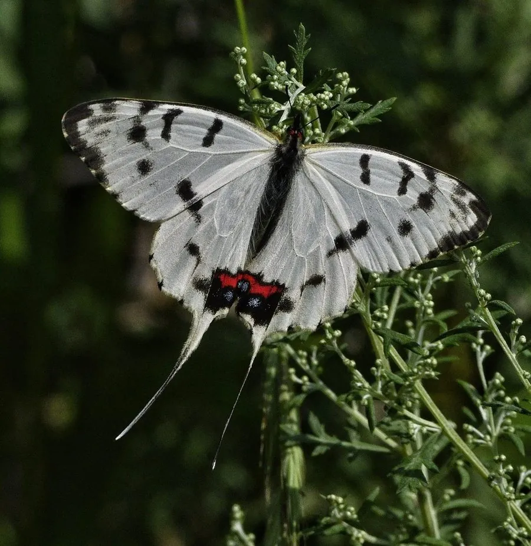

昆虫 · 动物界
丝带凤蝶 Sericinus montela

尾突细长如丝带的一种小型凤蝶，雌雄花纹差异明显，幼虫取食马兜铃，是中国和东亚常见的观赏蝴蝶。
- 分类
- 门节肢动物门纲昆虫纲目鳞翅目科凤蝶科属丝带凤蝶属
- 栖息环境
- 林缘、灌丛、山谷和溪边，马兜铃分布的地方
- 地理分布
- 中国大部分地区、日本和朝鲜半岛
- 保护级别
- 暂无评估
物种志
丝带凤蝶翅展约 6–8 cm，雄蝶翅面白底，翅脉黑色，后翅有黑斑和红斑，尾突细长如丝带；雌蝶翅面黑褐色，斑纹更复杂，尾突也较长。雌雄外观差异明显，常被误认为不同种类。
成虫飞行缓慢，喜欢访花和在水边吸水，雌蝶把卵产在马兜铃的叶片上，幼虫取食马兜铃，并在体内积累毒素，使天敌避食。它一年发生多代，以蛹越冬，分布在中国大部分地区、日本和朝鲜半岛，常见于林缘、灌丛和山谷。丝带凤蝶因体态轻盈、尾突飘逸而受到蝴蝶爱好者喜爱，也是马兜铃和蝴蝶协同进化的研究材料之一。它常贴着地面缓慢飞行，停歇时双翅合拢，看起来像一片小叶子。它的蛹为褐色。
形态与习性
- 食性幼虫取食马兜铃；成虫吸食花蜜
- 翅展约 6–8 cm
- 特征后翅尾突细长如丝带，雌雄花纹差异大
- 生活史一年发生多代，以蛹越冬
- 分布中国大部分地区、日本和朝鲜半岛
趣味知识
- 丝带凤蝶的尾突又细又长，像两条飘动的丝带。
- 雌蝶和雄蝶的花纹差别很大，差点被当成两种蝴蝶。
- 幼虫取食马兜铃，并把它体内的毒素储存起来防身。